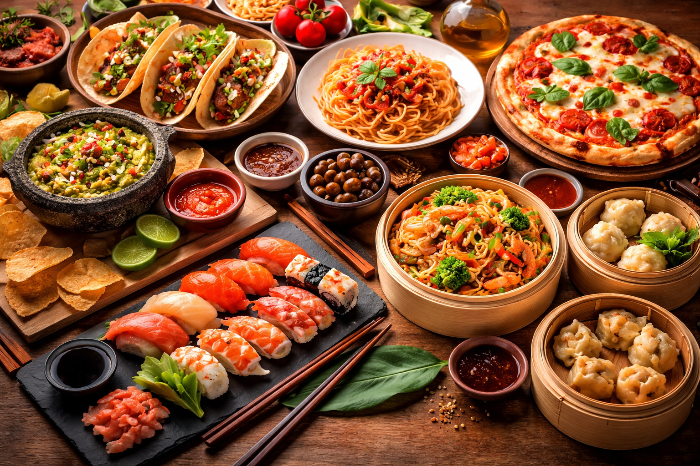
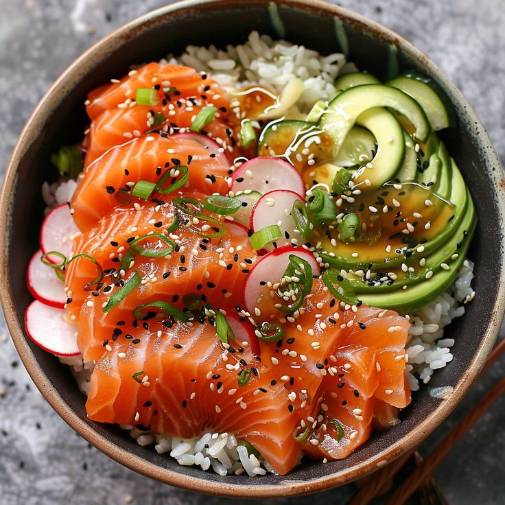

Cuatro culturas, un solo lugar
Disfruta de una experiencia gastronómica única con platillos de la cocina mexicana, italiana, japonesa y china.
Disfruta de una experiencia gastronómica única con platillos de la cocina mexicana, italiana, japonesa y china.



